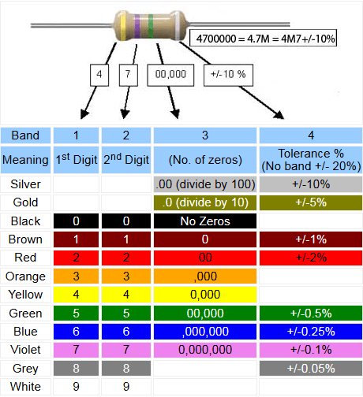

Introduction
Electricity is the flow of electronics in a closed circuit. Voltage is the difference in electrical potential between two points, measured in Volts. Current is the rate of flow of electrical charge past a point, measured in Amps. Electrical resistance (or Resistance) of an object is a measure of the opposition to the flow of electric current, measured in Ohms. In order for current to flow through the circuit, the circuit must be closed. There are two types of electric currents, AC (Alternating current) and DC (Direct current). AC is where the voltage cycles from positive to negative values, alternating in time, found in home electricity sockets. DC is where the voltage potential is at a fixed value (either positive or negative), found in batteries. We will mainly work with DC currents and voltages.
Electrical Laws
- Ohm's Law: Voltage = Current * Resistance
- Total Resistance:Resistors in series, R = R1 + R2 + ... Resistors in parallel, 1/R = (1/R1) + (1/R2)...
- Kirchoff’s first law (the current law): At any junction, or node, in an electrical circuit, the sum of the currents flowing into the node is the sum of the currents flowing out of a node.
- Kirchoff’s second law (the loop/mesh law): When the direction is taken into account, the sum of the potential differenes in any closed circuit is zero.
Electrical Components
Electrical components can be grouped into 3 types, Insulators, which prevents current from following (such as plastics and wood), Conductors, which allows current to flow (such as copper, gold and sea water) and Semiconductors,which allows current to flow only if some electrical conditions are met. Some common electrical components include:
- Wires: Conductors of extremely low resistance, made with copper inside and insulator outside such as rubber. Used to connect components together and create a closed circuit
- Switches: An electrical component that is able to open or close a circuit. Usually, it has 2 contacts which can be connected or diconneceted in the switch.
- Resistors: An electrical component which has a fixed resistance to current. Their resistance values are colour coded. 
- Diodes: semi-conductors that allow current to flow ONLY in one direction. It can be used for filtering AC, where only positive or negative voltage can flow through. LED (Light Emmiting Diodes) are special diodes which give off light when the current flows in the correct direction.
In tinkercad, which is an online program, you are able to construct circuits digitally to test and design them before implementing them physically. It also allows you to explore electronics and learn about the different componnents, and how they behave with one another.